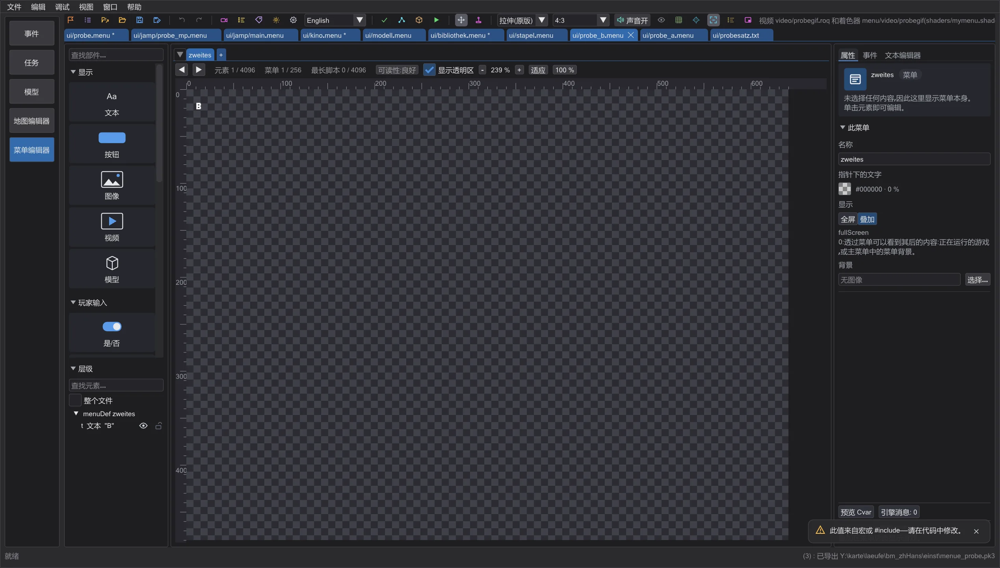
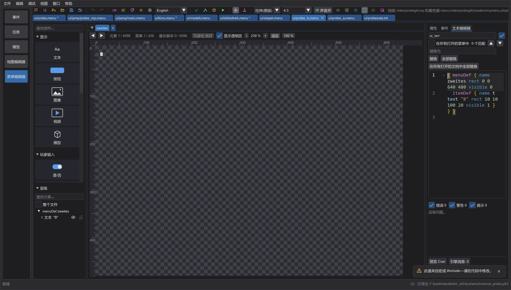
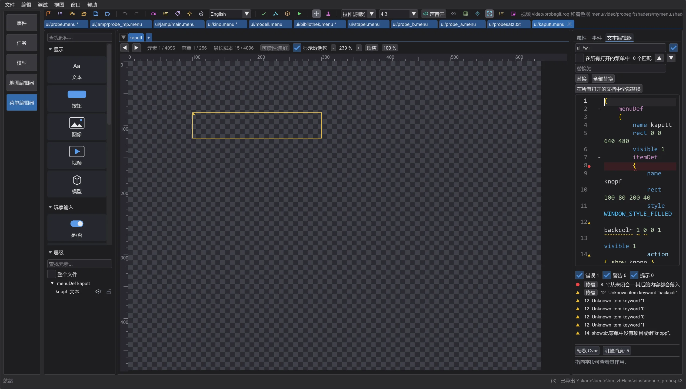
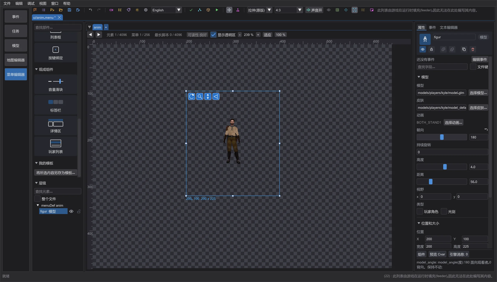
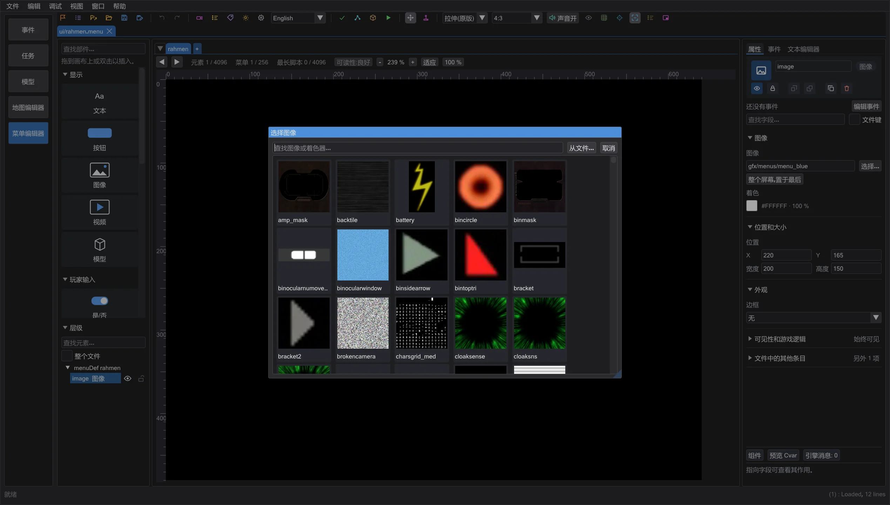
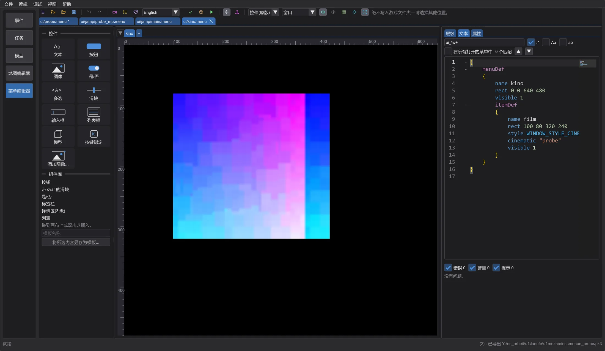
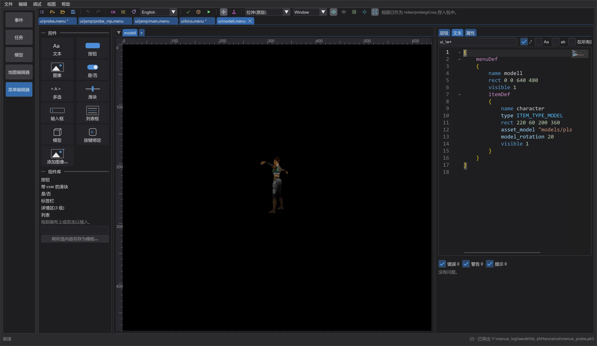
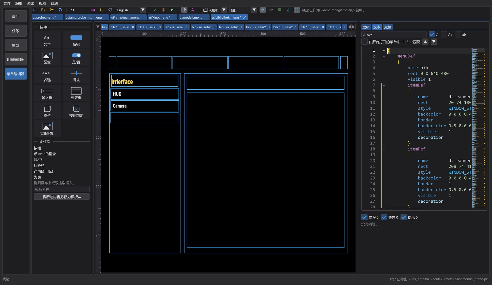
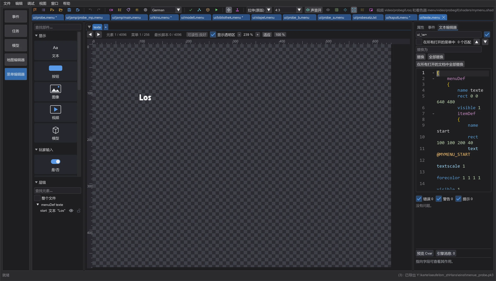

菜单编辑器:预览、检查与打包
带选项卡的右侧栏、输入时的实时诊断、与游戏一致的视频、3D 模型和光剑、控件库、多语言文本、声音、针对游戏的检查、游戏内测试以及由 TrueType 生成的字体。
另存为 (Ctrl+Shift+S) 以新名称保存;在项目中写入副本。Ctrl+S 保存,光标在文本编辑器中时也可以。如果其他程序更改了打开的文件,画布上方的一行会提供 从磁盘加载(一个撤销步骤)或 保留我的版本。
布局:画布占满高度#




左栏包含部件,其下是可折叠的 层级:带搜索的菜单、组和项。眼睛图标只在预览中隐藏项,锁防止移动,拖动改变绘制顺序,Ctrl 添加到选择,Shift 选择范围。右栏包含 属性、事件 和 文本编辑器(代码编辑器,下方是问题)。拖动分隔条可改变宽度;标签页和宽度会被记住。单击画布时,即使打开了其他标签页,文本光标也会移到该 itemDef——切换到 文本编辑器 时该行已在那里。文本在下方的旧布局在首选项中(文本编辑器在底部(旧布局)),在文本编辑器中自动换行 也在那里(否则长行用 Shift + 鼠标滚轮横向滚动)。
层级 只显示打开的选项卡中的元素,并跟随画布上的选择。整个文件 显示文件的所有 menuDef,例如用于把元素移到其他页面。在状态选项卡(ui_sel=0_0)上只列出在那里可见的内容。面板保持最小宽度,所有数字都可读;长行会换行。
实时诊断#

输入时,菜单会在片刻后于后台检查。波浪线标出确切位置——红色为错误,黄色为警告,蓝色为提示——边栏显示符号;悬停显示消息:有游戏原文时使用原文(Unknown item keyword 'backcolr'),并附简短说明。文本下方的问题列表可跳转到该位置并在画布上选中该项;有错误和警告的项在画布上带有边框。
- 括号
{ }、( )和引号:缺失、多余或不匹配——同时标出开始和结束的位置;缩进指出缺少括号的地方。 - 各版本的未知关键字、单人模式会默认读为 0 的数字、重复的 menuDef 名称、不存在的 open/close/show/hide/setfocus 目标、看似已知 cvar 拼写错误的 cvar。
- 针对游戏的检查(与 按游戏检查 规则相同):限制、永不可见的项、缺失的文件。
- 在列表中点 修复 或在光标处按 Ctrl+.,可在答案明确时应用快速修复:插入缺失的括号、正确的关键字、相似的现有文件、已知的 cvar。撤销可还原。
视频、模型与光剑#






cinematic 和 videoMap 播放 RoQ 视频;导入视频 将视频或 GIF 转换为 RoQ 并放入 video/。ITEM_TYPE_MODEL 以游戏的摄像机、光照和旋转显示模型;角色菜单像游戏一样根据 cvar 和数据源(种族、头部、颜色)构建玩家。光剑横放,剑柄和剑刃来自 .sab:长度、半径、剑刃数、单刃/双刃杖、颜色——光晕和剑芯与渲染器一致。Movie Duels 遵循 cg_SFXSabers 的全部样式(见下一页)。
同时两个视频不会播放:引擎一次只播放一个视频,在游戏中它们会互相卡住。预览也一样,并在画布上方说明。
部件、详情区和菜单集#

现成组件 包含已设置好的部件:音量滑块、标签栏、三级详情区和玩家列表;把它拖到画布上或双击。将所选内容另存为模板 将所选内容变成自己的模板。打开整个菜单集(menus.txt) 打开 menus.txt 中的每个文件;脚本中的 open 会切换到该菜单所在的文件。
多语言文本与声音#

文本 列出游戏所有语言中的自定义 @ 文本以及菜单使用的 @ 键(缺失的可一键创建)。它们以 strings/<语言>/<包名>.str(Jedi Academy、Movie Duels)或 strip/<包名>.sp(Jedi Outcast)写入包中。旁边的语言框切换预览语言。在 交互 中菜单像游戏一样播放声音——soundLoop、play、playlooped、项的焦点声音或 assetGlobalDef 中的声音(工具栏中的 声音开 可关闭)。
检查、导出与游戏内测试#
在游戏中测量的限制: Jedi Academy 单人模式每个菜单绘制 150 个元素,多人模式 256 个 (OpenJK 512,检查会提示),Jedi Outcast 单人 128、多人 256,Movie Duels 4096。超出部分会被丢弃,菜单仍然保留。指针下的文字: 没有 focusColor 时,指针移到按钮上文字就会消失;新菜单已包含,Properties 中的 指针下的文字 可设置,检查会指出缺少它的元素。多人模式的模型: 没有 model_g2skin 时游戏会把模型画得很暗;检查会提示,预览仍显示默认皮肤。没有内容打开菜单: 没有其他菜单为其使用 open 时,检查也会提示。
按游戏检查 针对 Jedi Academy、Jedi Outcast 和 Movie Duels 检查所有打开的菜单:各版本的限制(每个菜单的项数、菜单数、脚本长度、多值、颜色范围、列表列——超出部分游戏会丢弃)、永不可见的项、缺失的图像、着色器、模型、视频、字体和声音,以及其他版本不认识的关键字或项类型。导出 .pk3 写入所有打开的菜单,或用 仅导出更改 只写入已更改的菜单——都包含你的包内容(图像、视频、文本、字体),若游戏会丢失内容则给出警告。
在游戏中测试 将已更改的菜单放入设置文件夹中的 menuetest(绝不放入游戏文件夹),并用指向该处的 fs_homepath 启动游戏文件夹旁的游戏程序,使你的文件替换游戏的文件。若程序无法指定单独文件夹,则在写入模组文件夹之前会先询问。
新菜单文件会自动进入包内游戏的菜单列表 (loadMenu),否则游戏永远不会加载它。没有菜单打开它时,按游戏检查 会发出警告。在游戏中测试 在启动后立即打开当前页面的菜单;这只在测试包中,绝不在导出的 pk3 中。多人模式下,原版每个菜单最多读取 256 个元素和 64 个菜单,OpenJK 为 512 和 128:介于两者之间时检查发出警告,超过时报告错误。
由 TrueType 生成字体#
从 TTF 生成字体 将 .ttf 或 .otf 转换为游戏字体:fonts/<名称>.fontdat(与游戏读取的格式完全一致)和包含菜单文本所有字符(Windows-1252)的 fonts/<名称>.tga。两者都进入包中;预览立即使用它们。